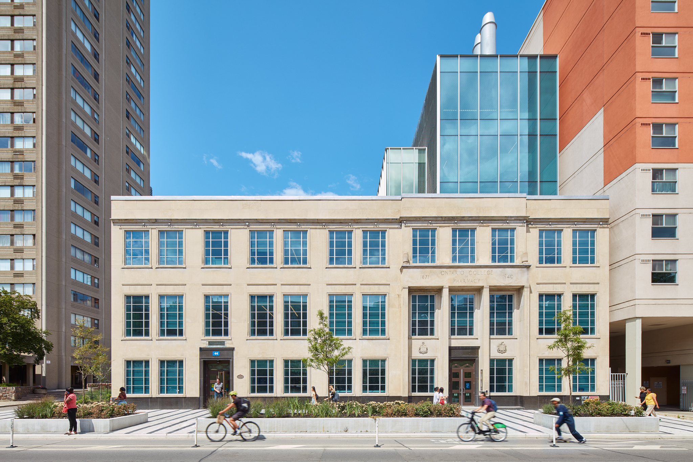

December 5, 2025
2025 Program Schedule
Theme
Auditory Neuroscience Today:
Sound, Speech, and the Brain
Sound, Speech, and the Brain

Centre for Urban Innovation
Toronto Metropolitan University
44 Gerrard St E
Toronto, ON M5B 1G3
View on Map
44 Gerrard St E
Toronto, ON M5B 1G3
Registration & Setup
9:00 - 10:00
Registration & Setup
9:00 - 10:00
9:00 - 10:00
Registration & Poster Setup
Morning Sessions
10:00 - 12:25
Morning Sessions
10:00 - 12:25
Opening Remarks
10:00 - 10:10
Opening Remarks
Session 1 (10:15 - 11:11)
10:10 - 10:30
Effects of older age and age-related hearing loss on dual-task listening-while-driving
Jennifer Campos (KITE - University Health Network)
10:30 - 10:50
fNIRS as a tool to study listening effort in older adults
Maxime Perron (Toronto Metropolitan University)
10:50 - 11:10
How individual differences in cognition support speech perception in noise
Ingrid Johnsrude (Western University)
Break
11:10 - 11:25
Coffee Break
Session 2 (11:25 - 12:25)
11:25 - 11:45
Differential reliance on sensory reinstatement and internally transformed representation during vivid retrieval of visual and auditory episodes
Lei Zhang (Rotman Research Institute)
11:45 - 12:05
Hearing loss and conversation success
Brandon Paul (Toronto Metropolitan University)
12:05 - 12:25
Neural tracking of speech in infancy
Holly Bradley (University of Toronto)
Lunch & Poster Session
12:30 - 2:00 Student & Trainee Poster Presentations
• Lunch provided during poster session
• Poster awards will be announced at closing
Poster Presentations
Afternoon Sessions
2:00 - 4:00
Afternoon Sessions
2:00 - 4:00
Session 3 (2:00 - 3:00)
2:00 - 2:20
Treating hearing loss in minority communities: A case study of the Hasidic Jewish community
Hillary Ganek (Brock University)
2:20 - 2:40
AI + Synchrotron Imaging: A New Frontier in Cochlear Implant Personalization
Hanif Ladak (Western University)
2:40 - 3:00
Linking Age-Related Hyper-Excitability in Sensory Cortex to Cognitive Aging: Intensity Manipulation
Priyanka Prince (Baycrest Academy for Research and Education)
Break
3:00 - 3:15
Coffee Break
Session 4 (3:15 - 4:15)
3:15 - 3:35
Event processing during listening: The relative contributions of discourse structure and prosody
Iuliia Lamekina (Rotman Research Institute)
3:35 - 3:55
Attentional disengagement during external and internal distractions reduces neural speech tracking in background noise
Yue Ren (Baycrest Academy for Research and Education)
3:55 - 4:15
Rhythmicity in speech and song benefits comprehension and neural tracking
Anna Czepiel (University of Toronto Mississauga)
Closing
4:15 - 4:30
Awards & Closing Remarks